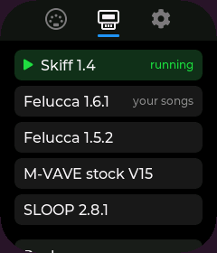
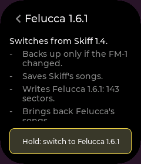

Play your FM-1 from any USB keyboard
Plug both into the hub. Outrigger carries the notes and the power: no computer, no MIDI adapters.
A palm-sized touchscreen that plugs in beside it. Play it from any USB keyboard, and switch its firmware without a laptop.
A palm-sized ESP32 board with a touchscreen. It runs the connection and shows what's happening.



Everything plugs into it, and one charger powers it all.
M-VAVE's pocket FM synthesizer: 27 keys, a speaker and a battery, for about $60–70. Its software can be swapped, and players have written more than 100 versions of it.
Any USB MIDI keyboard or pad controller that works without a driver. One at a time.
Has a 5-pin or 3.5 mm MIDI out? A cable into the FM-1's MIDI IN plays it without Outrigger.
Plug both into the hub. Outrigger carries the notes and the power: no computer, no MIDI adapters.
Turn the FM-1 into a groovebox, a drum machine or an ambient generator. Outrigger backs up first, and your songs come back when you switch back.
Beta: needs one setup from a Mac first. All 104 at the Firmware Hub ↗
Plug the board into your computer. About two minutes, free.
Works today: Waveshare ESP32-S3-Touch-LCD-1.69, a 240×280 touchscreen. Buy on Amazon ↗
Next, we expect: Waveshare's 1.8-inch AMOLED and 3.5-inch touch boards, once Outrigger supports them.
It has to be an ESP32-S3 with native USB. Skip boards whose only USB port says "one-click download": they have a converter chip and can't host a keyboard.
M-VAVE's pocket FM synth, about $60–70. Buy on Amazon ↗
A USB-C data cable from the hub to Outrigger. The FM-1 and most keyboards come with their own.
On the board, open Settings and tap Computer twice. Plug it into your computer and click Install. Your backups stay.
Try another cable: charge-only cables never show up. Or hold BOOT, tap RST, let go of BOOT, and click Install again.
It's almost certainly not dead: its install mode lives in ROM. The Firmware Hub's Rescue or the Unbricker brings it back from a computer.
The board has room for one controller next to the FM-1. Unplug the other one.
On the board, never online. Copying them to a computer comes in a later version.